Description
ErgoScan
Creating, designing and developing an app that helps to analyze and improve workspace ergonomics.
ErgoScan is an iOS app that measures your workspace with AR and analyzes it with AI, so you can fix your setup yourself. No expert, no cost.
Project Background
Many people spend 8+ hours a day at their desk. Without realizing it, they adjust to their setup, slouching a little more, straining a little further. The damage adds up.
The Problem
Process
ErgoScan measures the workspace with AR and analyzes it with AI. The whole flow is built around one idea: give people a clear answer about their own setup and the next step to fix it, without an expert and without cost.
User Flow
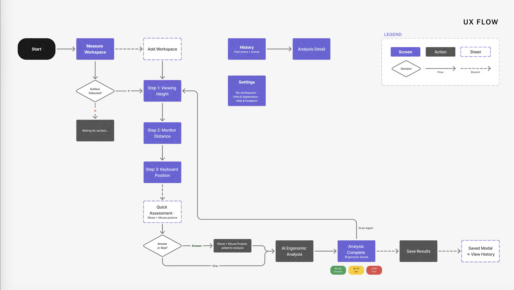
Measuring with AR
The scan walks through viewing height, monitor distance and keyboard position, then a quick assessment adds what the camera can't see: how the wrists sit while typing and using the mouse.
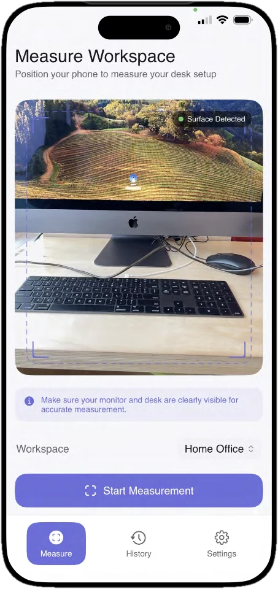
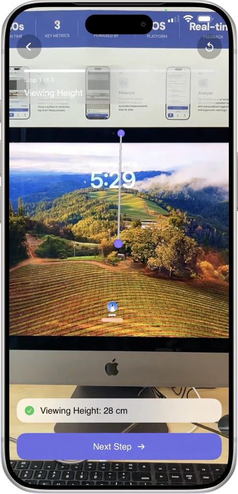
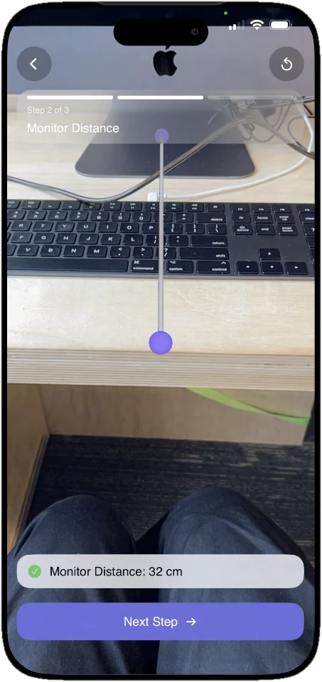
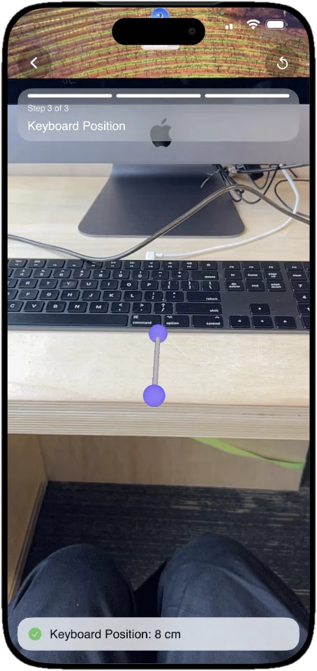
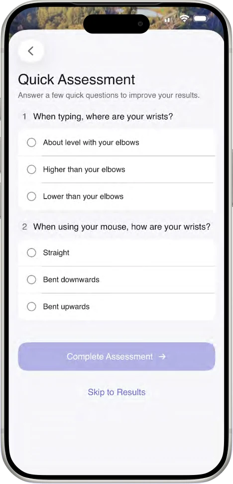
Iterations
During an in-class showcase, peer testers found the free-tap method uncertain. Tapping anywhere on a small viewport made it hard to place points with confidence. The interaction didn't match anything they already knew.
Before
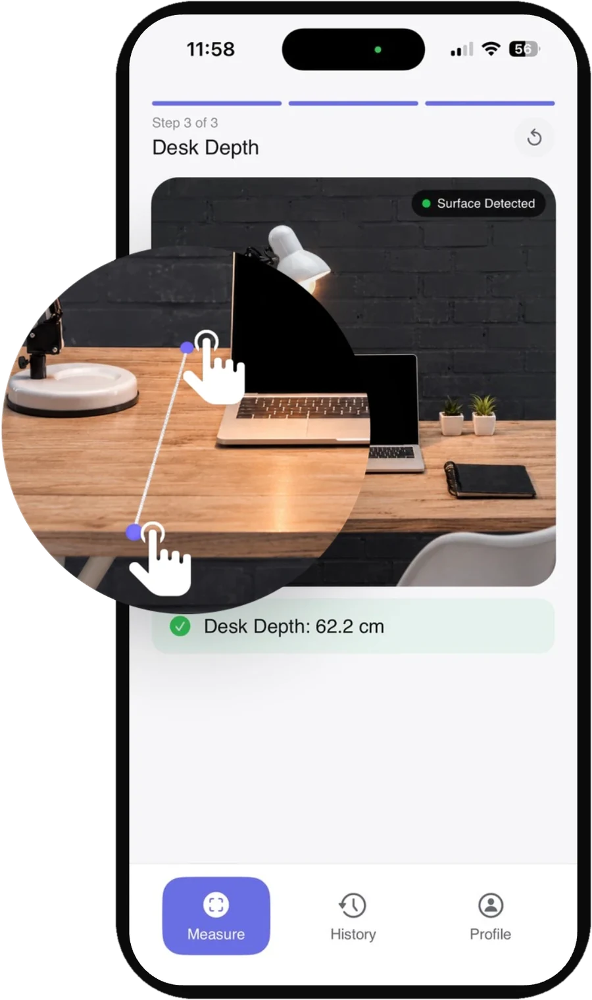
- Free tap to place points
- Viewport too small to aim precisely
After user feedback
- Aim with a crosshair, tap + to place points
- Full-screen camera
Switched to a crosshair + plus button pattern and expanded the camera to full screen. Users already know this from iPhone's Measure app, so there is no learning curve and fewer misplaced points.
Ergonomic Report
Early versions showed raw measurements in a flat list with no clear priority. Related information about a single measurement was spread across the screen, forcing users to scroll up and down to piece it together. Cards were too text-heavy to scan quickly, and there was no grouping to separate what needed action from what was fine.
Before
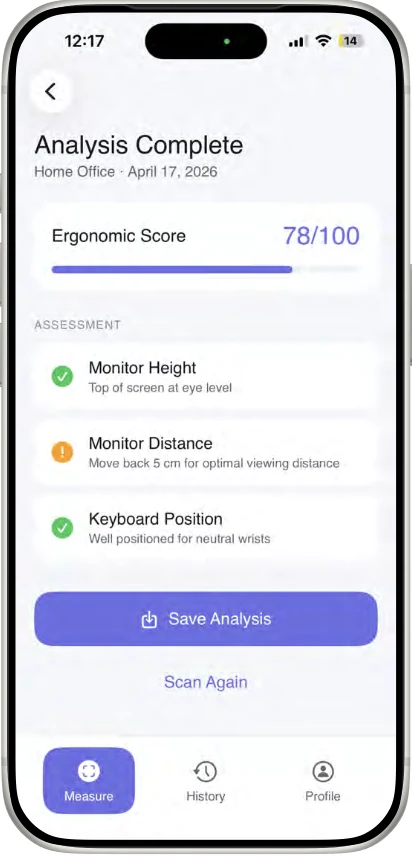
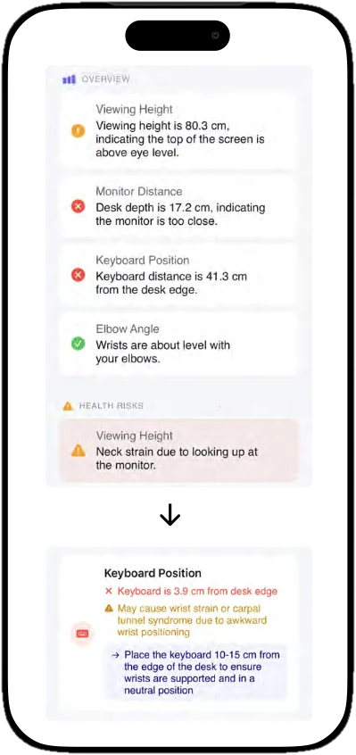
- Colour based on brand, not status
- Incorrect grouping
- Too much text per card
After
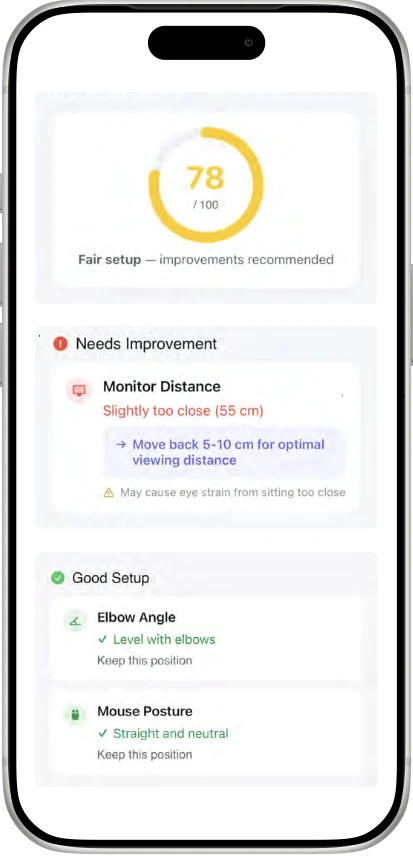
- Score at a glance with semantic colour
- Needs Improvement surfaces first
- All info for one measurement in one card
Replaced brand colours with semantic colour: green, yellow, and red map directly to good, fair, and poor. Results are grouped into Needs Improvement and Good Setup. Qualitative labels replace raw numbers. Good states show only a short confirmation. Detail appears only where action is needed.
Know what's wrong. Watch yourself improve.
Every scan ends with a score, a short list of what to fix first and what is already working. Saved results build a history, so each change to the desk shows up as a better score.
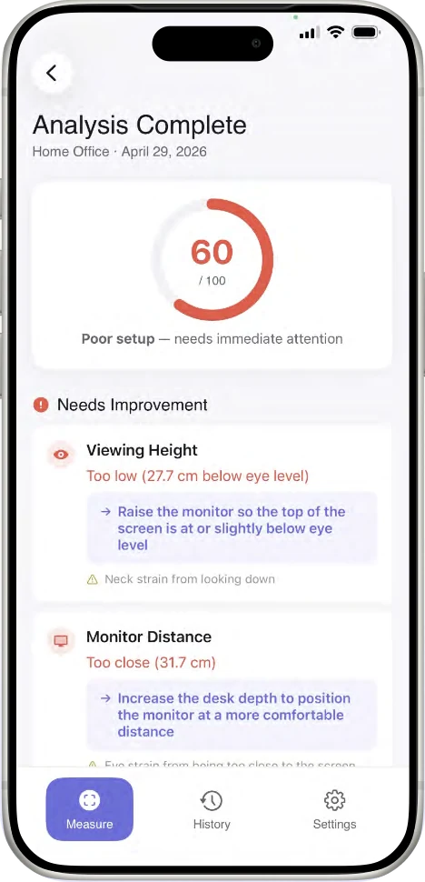
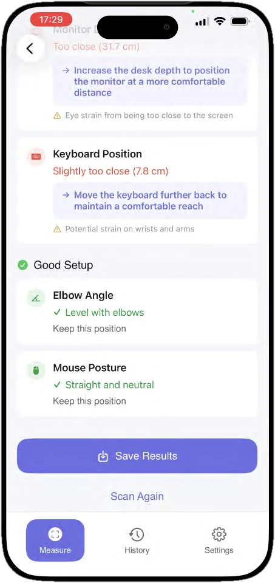
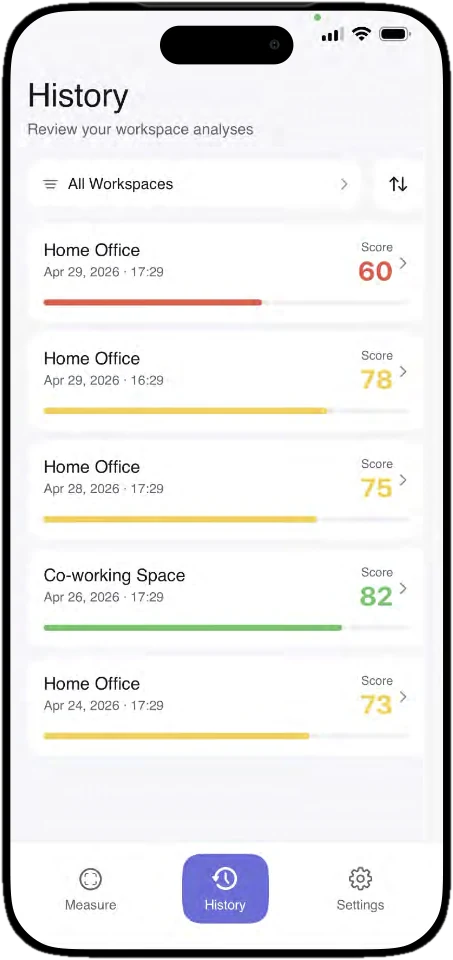